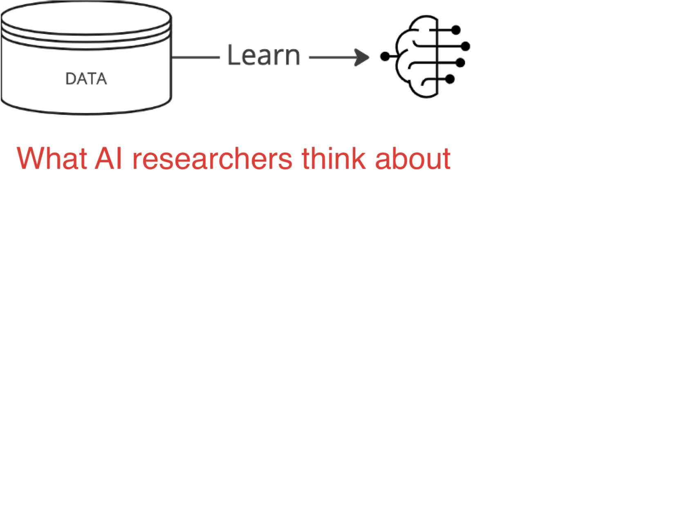
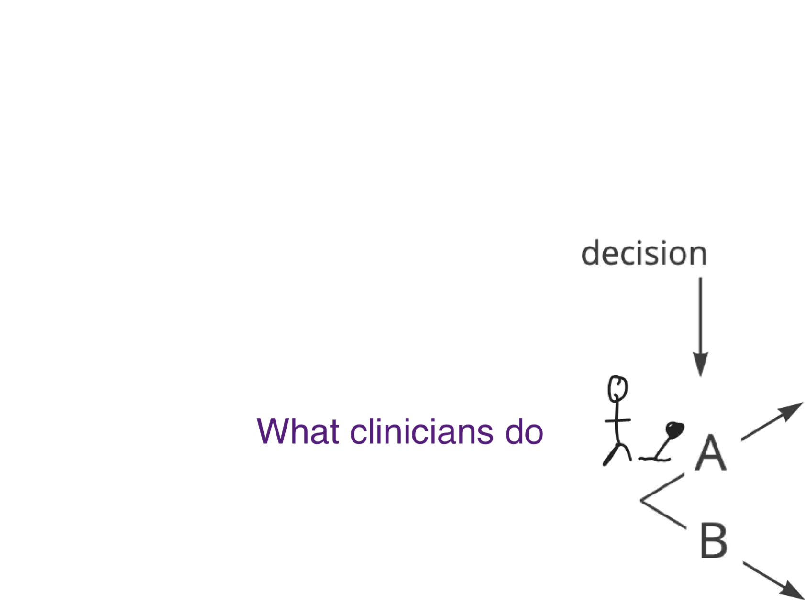
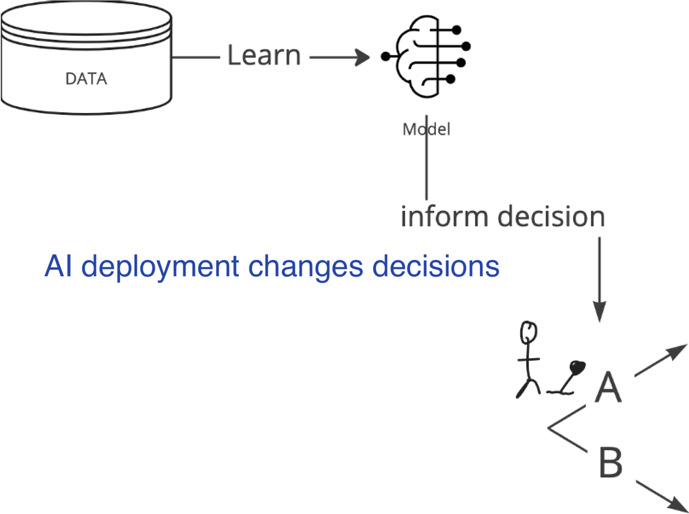
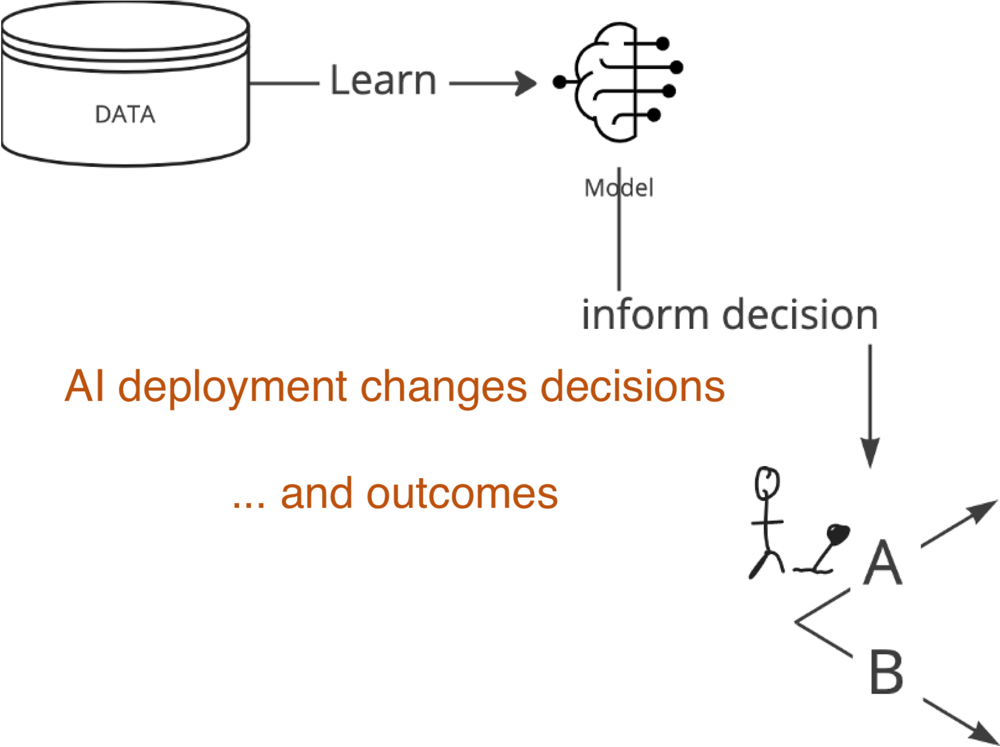
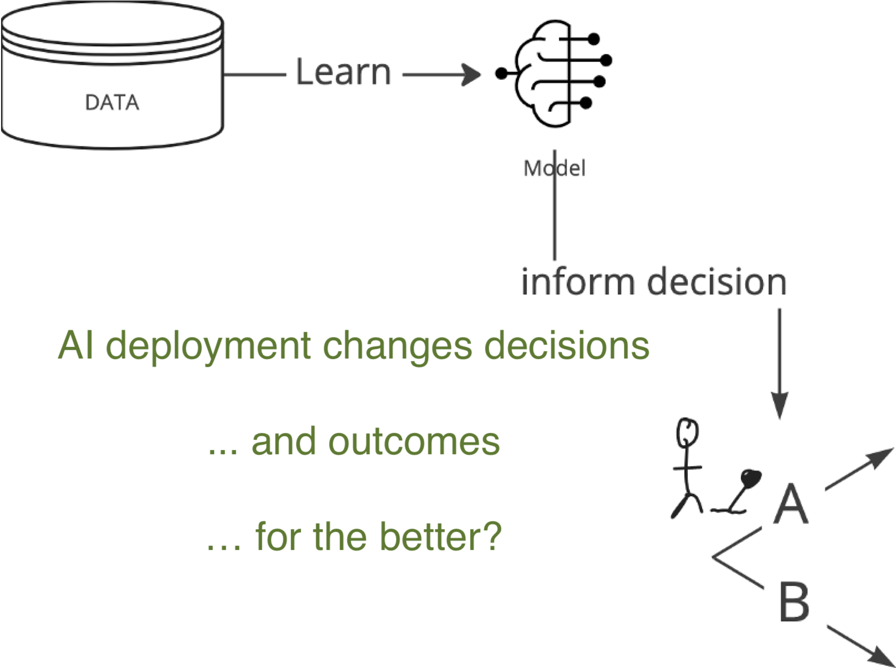
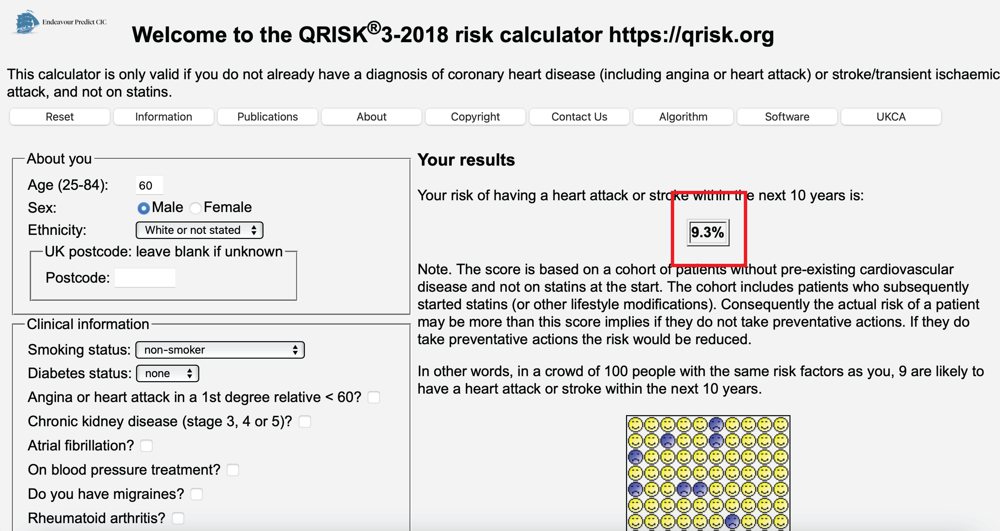
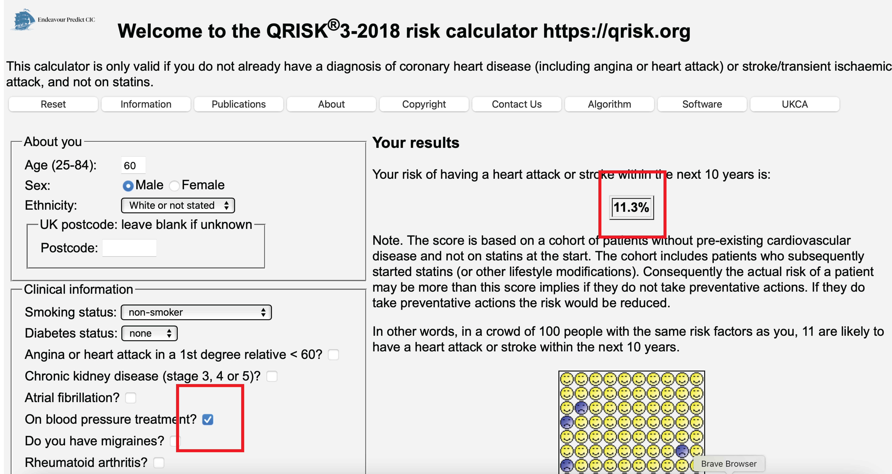

Dagstuhl Seminar 2025
2025-01-27





Prediction under intervention is estimating expected outcomes under hypothetical interventions, conditional on patient characteristics
(aka counterfactual prediction)
\[E[Y|X,\text{do}(T)]\]
this is not the fast road from computer science experiment to impact, but may be the most rewarding
Using QRISK to decide on blood pressure medication (which it’s not intended for)


Imagine this dialogue between a patient who has just been diagnosed with cancer and their oncologist First, we’ll see a conversation informed by
Oncologist: Your work-up is done, we now know your cancer type and stage
Patient: What is my prognosis?
Oncologist (treatment-naive model): on average, other patients who share characteristics X with you live … more years.
Patient: Is there a treatment you can give me to improve my prognosis?
Oncologist (RCTs): treatment A leads to several more months survival than treatment B on average, though some patients have severe side effects
Patient: And how long do patients live with treatment A?
Oncologist: The average patient in the randomized trial who got treatment A lived … years, but those patients were younger and in better overall health than you so their results may not apply to your specific case.
Patient: So how long do patients like me survive when they get treatment A?
Oncologist (post-decision model): Looking back, patients who share characteristics X with you and got treatment A lived … years. However, these patients may differ with respect to characteristics Z from you.
Patient: This is getting a bit confusing, should I or should I not get treatment A?
Oncologist: I know this is a very tough decision, but ultimately, it’s yours to make.
Oncologist: Your work-up is done, we now know your cancer type and stage
Patient: What is my prognosis?
Oncologist (prediction under intervention): That depends on the treatment we choose; patients like you would on average live … years on treatment A, versus … years on treatment B.
Patient: Thank you for this information. I will discuss this with my family and friends to decide what we think is best for me.
©Wouter van Amsterdam — WvanAmsterdam — wvanamsterdam.com/talks